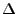

Next: Fractional Delay Up: Delay-and-Sum Beamforming
Previous: Performance Contents
One method of estimating the signal delay between microphones is to
measure the cross power spectrum between successive microphones.
The measurement is done in the frequency domain because the delays
will be less than a sample apart, requiring us to look at the phase
information. A simplification of [Ku]
is presented which assumes no noise or reverberation. Let the
signal, S, pass S1 before S2 with G1 and G2 being the path loss and
 being the time delay from S1 to
S2,
Take the cross power spectrum to be
Now it's clear that the slope of the angle is the time delay
information needed. So to estimate the delay, we need to take the
discrete fourier transform, find the cross power spectrum angle,
and estimate the slope. And hopefully the noise and reverberation
will not significantly disturb our estimation.
Next: Fractional Delay Up: Delay-and-Sum Beamforming
Previous: Performance Contents
Todd A Goldfinger 2004-11-22